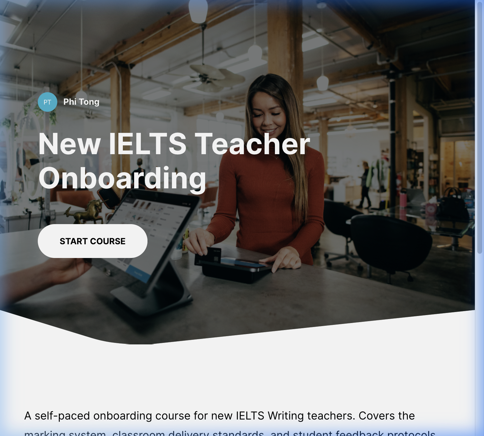

Zero-Friction Onboarding
A mobile-first orientation suite engineered for rapid global scaling, focusing on Day 1 productivity through frictionless instructional UX.
⚡ Project Executive Summary: OPERATIONAL ONBOARDING
The Challenge: The "Time-to-Proficiency" Bottleneck
Rapid global scaling often leads to cultural misalignment and compliance delays. New hires were losing productive time navigating fragmented documentation. We needed a solution that enabled immediate operational readiness.
The Architecture: UI/UX Focused Micro-learning
I designed a Mobile-first, Zero-Friction onboarding experience built on Articulate Rise 360.
Curriculum was built using Gagne’s Nine Events of Instruction, focusing on active mastery. Integrated the learning journey directly into the team’s communication stack (Slack).
Strategic Impact: Accelerating Business Readiness
The 30-Minute Proficiency: Reduced the mandatory training time-to-proficiency to under 30 minutes, allowing contributing on Day 1.
Compliance Certainty: Achieved 100% compliance tracking across geographically diverse teams, reducing organizational risk during rapid growth.
Senior Architect’s Takeaway: This project demonstrates my expertise in UX-driven Learning Design, proving that a focus on "Zero-Friction" architecture directly impacts a company’s bottom line during rapid scaling.
The Challenge
During rapid company scaling, onboarding new teachers remotely became a bottleneck. The goal was to create a zero-friction, mobile-first experience that delivers cultural alignment and mandatory compliance training in under 30 minutes.

The Approach: Micro-learning
I adopted the Gagne's Nine Events of Instruction to structure the flow. Using Rise 360's rapid development capabilities, I focused on high-engagement blocks like labeled graphics and interactive sorting to replace passive reading.


Validation & Accessibility
Knowledge checks are embedded throughout each lesson to ensure mastery before moving forward. The entire course was tested for Mobile responsiveness to accommodate teachers joining from diverse geographic locations.